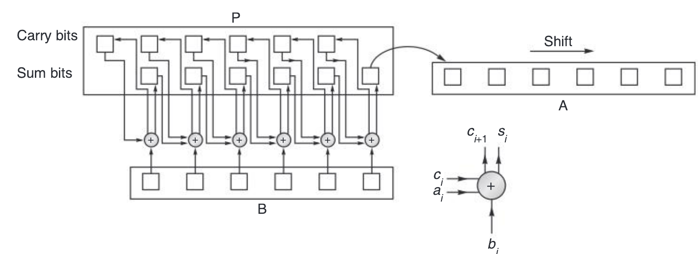
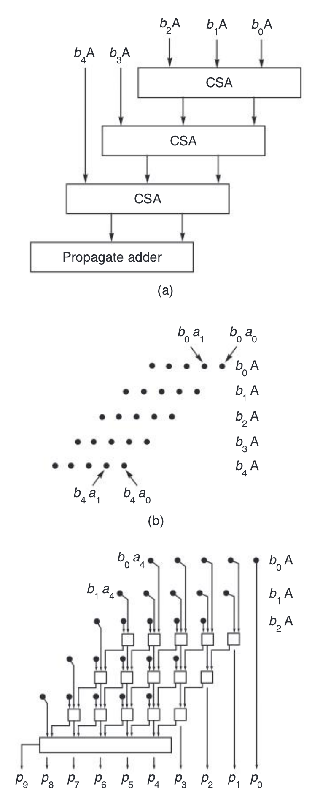
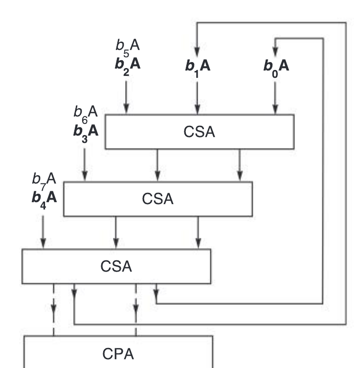
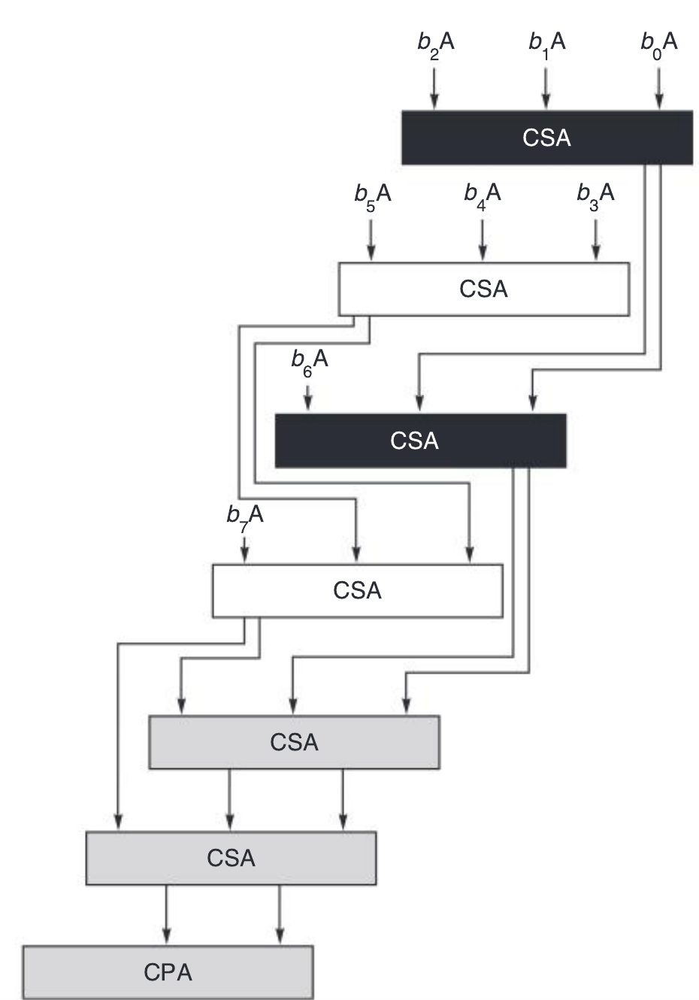
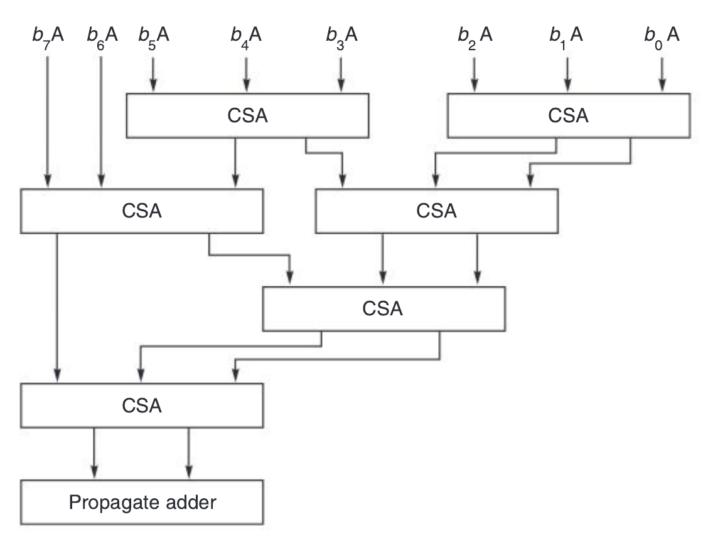
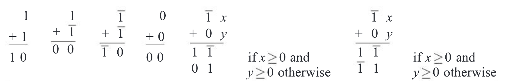
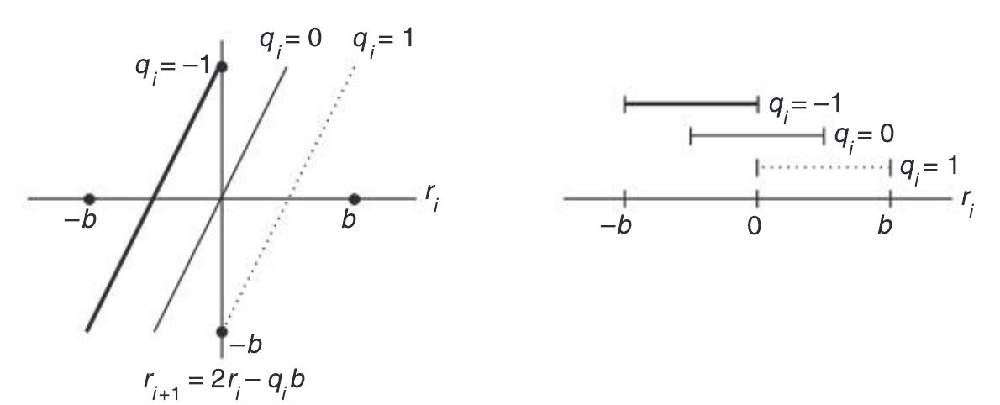
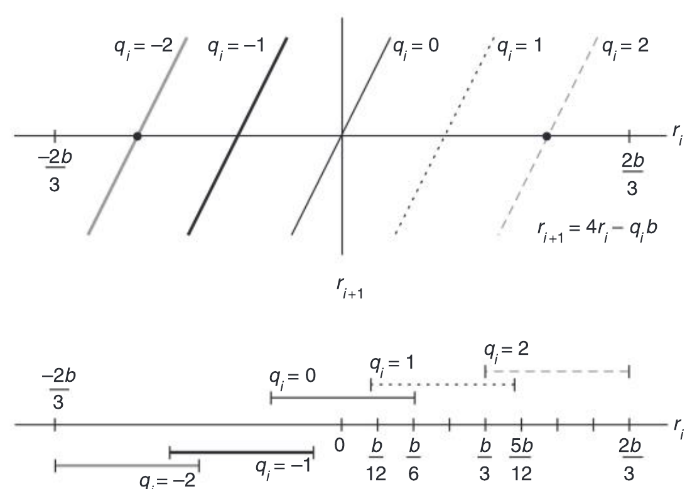

J.9 整数乘法和除法的加速
J.2 节介绍的乘法和除法算法相当慢，每个周期只产生 1 位（尽管这个周期可能只是 CPU 指令周期的几分之一）。本节讨论提高乘法和除法性能的各种技术，其中包括 Pentium 芯片使用的除法算法。
跳 0 移位
跳 0 移位（shifting over zeros）技术目前用得不多，但很有启发意义。它的特点是执行时间与操作数有关。这种技术很少使用，主要原因是它比每次处理 1 位的算法快不了多少。此外，执行时间可变的算法很难流水线化，很难与 CPU 同步，也很难做好编译器优化。在乘法中，跳 0 移位的做法是增加一段逻辑，检测 A 寄存器的最低位是否为 0（见图 J.2(a)）；如果是 0，就跳过加法步骤，直接进入移位步骤。跳 0 移位的名称就由此而来。
除法能不能也这样移位呢？不恢复余数除法每一步都要做一次 ALU 运算（加法或减法），看起来没有机会跳过运算。但除法可以换一种方式理解：计算 \(a/b\)，就是从 \(a\) 中减去 \(b\) 的倍数，再报告一共减了多少次。在减法过程的每个阶段，余数都必须能放进图 J.2(b)的 P 寄存器。余数是一个小的正数时，通常要减去 \(b\)；假如这时只把余数移位，下一次再减 \(b\)，会怎么样呢？只要余数足够小（最高位为 0），移位后仍能放进 P 寄存器，信息不会丢失。不过，这样做就要改变记录「从 \(a\) 中减了几次 \(b\)」的方式。这种思路通常称为 SRT 除法，名称取自 Sweeney、Robertson 和 Tocher 三人，他们各自独立提出了这类算法。SRT 除法带来的主要额外麻烦是：商位不能像普通不恢复余数除法那样，在每一步由 P 的符号立即确定。
具体做法如下。设 \(a\) 和 \(b\) 都是 \(n\) 位数，要计算 \(a\) 除以 \(b\)，先把 \(a\) 和 \(b\) 分别装入图 J.2的 A 寄存器和 B 寄存器，然后执行如下步骤：
SRT 除法
- 如果 B 用 \(n\) 位表示时有 \(k\) 个前导 0，就把所有寄存器左移 \(k\) 位。
- 对 \(i = 0, n - 1\)，执行：
- 如果 P 的最高三位相等，置 \(q_i = 0\)，并把 (P,A) 左移一位。
- 如果 P 的最高三位不全相等且 P 为负，置 \(q_i = -1\)（也写作 \(\bar{1}\)），把 (P,A) 左移一位，再加 B。
- 否则置 \(q_i = 1\)，把 (P,A) 左移一位，再减 B。
- 如果最后的余数为负，就加 B 来修正余数，并从 \(q_0\) 减去 1 来修正商。最后，余数必须右移 \(k\) 位，\(k\) 是第 1 步开始时左移的位数。
图 J.23 给出了一个数值例子。我们讨论的虽然是整数除法，但为了便于解释这个算法，不妨设想二进制小数点就在最高有效位的左边。这样，图 J.23 就从 \(01000_2/0011_2\) 变成了 \(0.1000_2/.0011_2\)。分子和分母的小数点同时移动，商不受影响。(P,A) 寄存器对存放余数，余数用补码表示。例如，如果 P 中是 \(11110_2\)，A = 0，那么余数就是 \(1.1110_2 = -1/8\)。设余数的值为 \(r\)，则 \(-1 \le r < 1\)。
图 J.23 \(1000_2/0011_2\) 的 SRT 除法。商位用粗体表示，并用 \(\bar{1}\) 表示 −1
| P | A | 说明 |
|---|---|---|
| 00000 | 1000 | 8 = 1000 除以 3 = 0011。B 中存放 0011。 |
| 00010 | 0000 | 第 1 步：B 有两个前导 0，所以左移 2 位。B 现在为 1100。 |
| 第 2.1 步：最高三位相等，属于情形 (a)，所以 | ||
| 00100 | 0000 | 置 \(q_0 = 0\) 并移位。 |
| 第 2.2 步：最高三位不相等且 P ≥ 0，属于情形 (c)，所以 | ||
| 01000 | 0001 | 置 \(q_1 = 1\) 并移位。 |
| + 10100 | 减 B。 | |
| 11100 | 0001 | 第 2.3 步：最高几位相等，属于情形 (a)，所以 |
| 11000 | 0010 | 置 \(q_2 = 0\) 并移位。 |
| 第 2.4 步：最高三位不相等，属于情形 (b)，所以 | ||
| 10000 | 010\(\bar{1}\) | 置 \(q_3 = -1\) 并移位。 |
| + 01100 | 加 B。 | |
| 11100 | 第 3 步：余数为负，所以恢复余数，并从 \(q\) 减去 1。 | |
| + 01100 | ||
| 01000 | 必须撤销第 1 步的移位，所以右移 2 位，得到真正的余数。余数 = 10，商 = 010\(\bar{1}\) − 1 = 0010。 |
有了这些准备，现在可以分析 SRT 除法算法了。算法的第一步把 \(b\) 移位，使 \(b \ge 1/2\)。选择哪种 ALU 运算的规则是：
- 如果 \(-1/4 \le r < 1/4\)（P 的最高三位相等时总是如此），就把 (P,A) 左移一位，算出 \(2r\)；
- 如果 \(r < 0\)（因而 \(r < -1/4\)，否则就已经被第一个条件排除了），就先移位再相加，算出 \(2r + b\)；
- 如果 \(r \ge 1/4\)，就从 \(2r\) 中减去 \(b\)。
利用 \(b \ge 1/2\)，很容易验证这些规则能保持 \(-1/2 \le r < 1/2\)。不恢复余数除法只能保证 \(|r| \le b\)，P 需要 \(n + 1\) 位宽；SRT 除法对 \(r\) 的界更紧，为 \(-1/2 \le r < 1/2\)，因此可以去掉 P 的最高位（\(b\) 和加法器的最高位也一并去掉），省下 1 位。特别是，原来要判断 P 的最高三位是否相等，现在只需判断两位。
实现 SRT 除法时，算法可能略有变化：每次 ALU 运算之后，P 寄存器可以按需要移若干位，使 \(r \ge 1/4\) 或 \(r < -1/4\)。移 \(k\) 位，就一次把 \(k\) 个商位置为 0。因此，SRT 除法有时也描述为一种让余数保持规格化、即 \(|r| \ge 1/4\) 的除法。
注意，SRT 除法某一步算出的商位，取决于这一步执行的是哪种运算，而这又取决于上一步运算的结果。不恢复余数除法则不同，第 \(i\) 步的商位取决于同一步运算的结果。这一差别的表现是：最后的余数为负时，SRT 除法必须调整最后一个商位，不恢复余数除法则不必。不过，SRT 除法商位最关键的特点是可以取 \(\bar{1}\)。图 J.23 虽然把商位存放在 A 的低位，但实际实现中不能这样做，因为一位放不下 −1、0、1 三个值。此外，商还必须在一个全加器中转换成普通的补码。常用的做法是：正的商位累积在一个寄存器中，负的商位累积在另一个寄存器中，等所有位都确定后，再把两个寄存器相减。用数字 −1、0、1 表示一个数，写法不止一种，所以说 SRT 除法采用的是冗余商表示。
SRT 除法与普通不恢复余数除法的区别可以归纳如下：
- ALU 判定规则。不恢复余数除法由 P 的符号决定；SRT 除法由 P 的最高两位决定。
- 最终的商。不恢复余数除法由 P 先后各次的符号直接得到；SRT 除法有三种商数字（1、0、\(\bar{1}\)），最终的商必须用一个完整的 \(n\) 位加法器算出。
- 速度。对于会产生 0 商位的操作数，SRT 除法更快。
上面给出的简单版 SRT 除法算法，在大多数情况下加速太小，不够实用。不过，本节后面会研究几种相当实用的 SRT 除法变体。
用单个加法器加快乘法
前面说过，跳 0 移位技术在当前的硬件中用得不多。下面讨论一些广泛使用的方法。提高乘法速度的方法分为两类：一类使用单个加法器，另一类使用多个加法器。先讨论使用单个加法器的技术。
讨论加法时已经指出，由于存在进位传播，用两级逻辑完成加法是不现实的。用图 J.17 的单元做两个 64 位数相加，计算各个 \(P\) 和 \(G\) 要经过 7 个单元，计算进位位还要再经过 7 个单元，至少需要 28 级逻辑。图 J.2 的简单乘法器每个乘法步都要经过这个加法器。改用进位保留加法器（carry-save adder，CSA），每一步的计算量可以大大减少。进位保留加法器就是 \(n\) 个相互独立的全加器。图 J.24 是使用这种加法器的乘法器，图中每个标有「+」的圆圈是一个一位全加器，每个方框代表寄存器的一位。每次加法得到一对位，分别存入 P 的和部分与进位部分。各位的加法相互独立，所以一次加法只经过两级逻辑，比 28 级大为改进。

使用图 J.24 的乘法器时，先把 P 的和位和进位位清 0，再执行第一次 ALU 运算。（如果采用 Booth 重编码，这次运算可能是减法而不是加法。）然后把 P 的最低和位移入 A，A 本身也同时移位。P 的高 \(n - 1\) 位不需要移位，因为下一个周期这些和位会送入低一位的加法器。每个加法单元都独立工作，不传播进位，因此每个加法步都快得多。
进位保留加法器有两个缺点。一是硬件更多，因为必须再加一份寄存器 P，存放加法器的进位输出。二是最后一步之后，必须把结果的高位字送入一个普通加法器，把和部分与进位部分合并起来。一种办法是把 P 的输出送回执行加法运算的那个加法器。P 用两个寄存器表示，所以用进位保留加法器做乘法有时称为冗余乘法：把 P 表示成两个寄存器之和的方式有很多种，这种表示是冗余的。不是 CSA 的加法器称为进位传播加法器（carry-propagate adder，CPA）。传播加法器可以用行波、先行进位或其他方法传播进位。
另一种不增加加法器而加快乘法的办法，是每一步检查 A 的低 \(k\) 位，而不是只检查 1 位，通常称为高基数乘法。以 \(k = 2\) 为例：这一对位是 00，就给 P 加 0；是 01，就加 B；是 10，只需把 \(b\) 左移一位再加到 P 上。遗憾的是，这一对位是 11 时，似乎就得计算 \(b + 2b\)。不过，采用高基数版本的 Booth 重编码可以避免这一点：把 A 看成一个 4 进制数，遇到数字 3 时把它改成 \(\bar{1}\)，并给高一位数字加 1 作为补偿。这种方案还有一个额外的好处：它和普通的 Booth 重编码一样，对负整数和正整数都适用（见 J.2 节）。
基 4 Booth 重编码的精确规则见图 J.25。在第 \(i\) 个乘法步，A 寄存器的低两位是 \(a_{2i}\) 和 \(a_{2i+1}\)。这两位和刚刚移出的那一位（\(a_{2i-1}\)）一起，选出要加到 P 寄存器上的 \(b\) 的倍数。图 J.26 给出了一个数值例子。这种乘法技术又称为重叠三元组（overlapping triplets），因为它查看 3 位来决定用 \(b\) 的哪个倍数，普通 Booth 重编码则只查看 2 位。
图 J.25 基 4 Booth 重编码使用的 \(b\) 的倍数。例如，如果 A 寄存器的低两位都是 1，最后从 A 寄存器移出的位是 0，那么正确的倍数就是 \(-b\)，见表的倒数第二行
| A 的低位：\(2i + 1\) | A 的低位：\(2i\) | 最后移出的位：\(2i - 1\) | 倍数 |
|---|---|---|---|
| 0 | 0 | 0 | 0 |
| 0 | 0 | 1 | \(+b\) |
| 0 | 1 | 0 | \(+b\) |
| 0 | 1 | 1 | \(+2b\) |
| 1 | 0 | 0 | \(-2b\) |
| 1 | 0 | 1 | \(-b\) |
| 1 | 1 | 0 | \(-b\) |
| 1 | 1 | 1 | 0 |
图 J.26 用基 4 Booth 重编码计算 −7 乘以 −5。标为 L 的一列是最后从 A 的右端移出的位
| P | A | L | 说明 |
|---|---|---|---|
| 00000 | 1001 | −7 = 1001 乘以 −5 = 1011。B 中存放 1011。 | |
| + 11011 | A 的低位是 0、1；L = 0，所以加 B。 | ||
| 11011 | 1001 | ||
| 11110 | 1110 | 0 | 右移两位，左端移入 1。 |
| + 01010 | A 的低位是 1、0；L = 0，所以加 −2b。 | ||
| 01000 | 1110 | 0 | |
| 00010 | 0011 | 1 | 右移两位。 |
| 积为 35 = 0100011。 |
重叠三元组的控制逻辑更复杂，而且 P 寄存器要加宽 1 位，以容纳可能加上去的 \(2b\) 或 \(-2b\)。也可以使用基 8（甚至更高基数）的 Booth 重编码，但这时可能的加数中就必须包括倍数 3B。基 8 乘法器通常在乘法运算开始时一次性算出 3B。
用多个加法器加快乘法
如果面积足够放下多个加法器，乘法速度就可以提高。图 J.27 是一个简单的阵列乘法器，它用三个 CSA 和一个传播加法器完成两个 5 位数的乘法。(a) 部分是方框图，本节一直采用这种画法。(b) 和 (c) 部分更详细地画出了加法器：(b) 画出加法器的全部输入，(c) 画出实际的各个加法器及其互连。(c) 中的每一行加法器对应 (a) 中的一个方框。图画成「扭斜」的，使位权相同的位排在同一列。实际实现时，阵列很可能排成正方形。

图 J.27 的阵列乘法器做的加法次数与图 J.24 的设计相同，因此它的延迟与单个进位保留加法器相差不大。但图 J.27 的硬件可以把乘法流水化，从而提高总的吞吐率。另一方面，这种程度的流水化有时用在阵列处理机中，J.10 节讨论的单芯片浮点加速器却都没有采用。附录 C 对流水线作了一般性的讨论，Kogge [1981] 则讨论了乘法器中的流水线。
有时，芯片上为算术部件预留的面积放不下一个大到足以完成两个双精度数相乘的阵列。这时常用的设计是图 J.28 那样的两遍结构：第一遍通过阵列，处理完 B 的 5 位；第一遍的结果反馈到阵列顶部，与接下来的三个加数合并；第二遍的结果再送入 CPA。不过，这种设计无法再流水化。

既然阵列所需的加法步数与图 J.2 和图 J.24 那些便宜得多的结构一样多，为什么阵列还这么受欢迎呢？原因有两个。
一是阵列的延迟比单个加法器小，因为阵列是组合电路，信号直接流过，不需要时钟控制。图 J.28 的两遍加法器一般仍要用时钟，但信号通过 \(k\) 个阵列所需的周期时间，可以小于图 J.2 或图 J.24 那类设计所需时钟周期的 \(k\) 倍。
二是阵列便于采用各种进一步加速的方案。图 J.29 就是其中之一。这种设计让两路加法并行进行，换句话说，每一路数据流只经过一半的加法器，因此运行速度几乎是图 J.27 乘法器的 2 倍。这种奇偶乘法器结构规整，在 VLSI 中很受欢迎。阵列还可以用异步逻辑来加速。图 J.2的乘法器需要时钟，原因之一是防止加法器的输出在完全稳定之前就反馈到加法器的输入端。因此，如果图 J.28 的阵列足够长，在第一个加法器稳定下来所需的时间内，任何信号都来不及从顶部传到底部，就有可能完全不用时钟。Williams et al. [1987] 讨论过采用这一思路的设计，不过用于除法器，而不是乘法器。

上一段介绍的技术，乘法时间仍是 \(O(n)\)；用树则可以把时间降到 \(\log n\)。最简单的树把加数 \(b_0\mathrm{A} \cdots b_{n-1}\mathrm{A}\) 两两合并，把加数的个数从 \(n\) 减到 \(n/2\)。然后这 \(n/2\) 个数再两两相加，减到 \(n/4\)，依此类推，经过 \(\log n\) 步得到一个和。但是，这种简单的二叉树无法直接用 (3,2) 全加器构成，因为全加器把三个输入变成两个，而不是把两个输入变成一个。图 J.30 是一种用全加器构成的树，称为 Wallace 树。在用 MSI 器件搭建计算机算术部件的年代，高速乘法器首选 Wallace 树。不过，用 VLSI 实现 Wallace 树有一个问题：如果试着把图 J.30 中 Wallace 树的所有加法器和通路都画出来，就会发现它没有图 J.27 那样整齐规整的结构。正因为如此，VLSI 设计者常常选用其他 \(\log n\) 设计，例如下面要讨论的二叉树乘法器。

用二叉树把加数相加，难点在于构造一个 (2,1) 加法器，把两个数字合并成一个和数字。由于有进位，用二进制表示做不到这一点，但换一种表示就可以做到。我们采用 \(1\)、\(\bar{1}\) 和 \(0\) 组成的带符号数字表示，前面理解 Booth 算法时用过这种表示。这种表示有两方面的代价：一是每个带符号数字要用 2 位来表示；二是两个带符号数字 \(a_i\) 和 \(b_i\) 相加的算法比较复杂，需要检查 \(a_ia_{i-1}a_{i-2}\) 和 \(b_ib_{i-1}b_{i-2}\)。这样虽然要往回看 2 位，但二进制加法由于有进位，可能要往回看任意多位。
两个带符号数字的相加算法可以这样描述：首先，用图 J.31 算出和位 \(s_i\) 和进位位 \(c_{i+1}\)；然后，把最终的和算成 \(s_i + c_i\)。表的设计保证了这个最终的和不会再产生进位。

例题 带符号数字 \(1\bar{1}0_2\) 与 \(001_2\) 之和是多少？
解答 最低的两位之和为 \(0 + 1 = 1\bar{1}\)，下一对之和为 \(\bar{1} + 0 = 0\bar{1}\)，最高的一对之和为 \(1 + 0 = 01\)，所以和为
\[ 1\bar{1} + 0\bar{1}0 + 0100 = 10\bar{1}_2 \]
这样就定义了一个 (2,1) 加法器。有了它，就可以直接用二叉树来做乘法。第一步并行地计算 \(b_0\mathrm{A} + b_1\mathrm{A}\)、\(b_2\mathrm{A} + b_3\mathrm{A}\)、…、\(b_{n-2}\mathrm{A} + b_{n-1}\mathrm{A}\)；下一步再把这些和两两相加，依此类推。虽然最后的和还要经过一个进位传播加法器，从带符号数字形式转换成补码，但任何使用 CSA 的乘法器都需要这最后一步加法。
概括起来，Wallace 树和带符号数字树都是 \(\log n\) 乘法器。Wallace 树用的门较少，但较难布局。带符号数字树结构更规整，但每个数字要用 2 位表示，加法逻辑也更复杂。与加法器一样，不同的乘法技术也可以组合使用。例如，Booth 重编码可以和阵列结合：在图 J.27 中，每个输入不再是 \(b_i\mathrm{A}\)，而可以是 \(b_ib_{i-1}\mathrm{A}\)。为了避免计算倍数 \(3b\)，可以使用 Booth 重编码。
用单个加法器加快除法
前面讨论过用单个加法器加快乘法的两种技术：进位保留加法器和高基数乘法。但是，想用这两种方法来加快不恢复余数除法，会遇到困难。
先看进位保留加法器。如果把图 J.2(b) 中的加法器换成进位保留加法器，P 就要换成两个寄存器，一个存和位，一个存进位位（对照图 J.24 的乘法器）。每个周期结束时，P 是这两个寄存器尚未求出的和，因此 P 的符号无法确定；而计算商数字、决定下一次 ALU 运算，用的恰恰是 P 的符号。
再看高基数。采用更高的基数时，问题在于确定从 P 中减去什么值。用纸笔做除法时，要猜商数字。二进制除法只有两种可能，我们可以先猜一个，再根据 P 的符号修正，从而巧妙地绕过这个问题。但在更高的基数下，可能的商数字不止两个，这种办法就行不通了，商的选择可能变得相当复杂：必须算出 \(b\) 的所有倍数，再一一与 P 比较。
如果采用冗余的商表示，进位保留技术和高基数除法就都能用了。回忆一下 SRT 除法（J.9 节「跳 0 移位」小节）的讨论：商数字允许取 −1、0 或 1，因此常常有不止一种选择。前面那个算法的思路是尽可能选 0，因为这样就可以省掉一次 ALU 运算。进位保留除法中，余数（即 (P,A) 寄存器对的值）以进位保留形式存放，无法确切知道，因此确切的商数字也无法知道；但由于采用了冗余表示，选商数字时并不需要精确知道余数。图 J.32 说明了这一点，图中 \(x\) 轴表示 \(r_i\)，即第 \(i\) 步之后的余数。标为 \(q_i = 1\) 的直线表示选择 \(q_i = 1\) 时 \(r_{i+1}\) 的值，\(q_i = 0\) 和 \(q_i = -1\) 的直线与此类似。只要 \(r_{i+1} = 2r_i - q_ib\) 满足 \(|r_{i+1}| \le b\)，\(q_i\) 取什么值都可以。允许的范围画在图 J.32 的右半部分。可以看出，要选出商数字 \(q_i\)，并不需要知道 \(r_i\) 的精确值，只要知道 \(r\) 落在某个足够小的区间内，这个区间能整个放进图 J.32 右半部分那些相互重叠的横杠中的某一条之内。

进位保留加法器正是据此使用的：取出进位保留加法器的高位，用传播加法器求和，再用得到的 \(r\) 的近似值（连同除数 \(b\)）算出 \(q_i\)，通常借助查找表完成。同样的技术也适用于更高基数的除法（无论是否使用进位保留加法器）：用 P 的高位去索引一张表，表中给出一个允许的商数字。
设计高速 SRT 除法器时，难点在于确定需要检查 P 和 B 的多少位。例如，假设采用基 4，商数字取 \(2\)、\(1\)、\(0\)、\(\bar{1}\)、\(\bar{2}\)，但使用的是传播加法器。需要检查 P 和 B 的多少位？确定这一点分两步。
第一步是确定 \(r_i\) 必须满足的界。普通的基 2 不恢复余数除法每一步都有 \(|r| \le b\)，因此 P 缓冲区不会溢出。但在基 4 下，每一步计算的是 \(r_{i+1} = 4r_i - q_ib\)，如果 \(r_i\) 接近 \(b\)，\(4r_i\) 就会接近 \(4b\)，即使取最大的商数字，也不能把 \(r\) 拉回到 \(|r_{i+1}| \le b\) 的范围内。换句话说，余数可能无限增长。不过，限定 \(|r_i| \le 2b/3\) 之后，很容易验证 \(r_i\) 会保持有界。
第二步，确定了 \(r_i\) 的界，就可以画出与图 J.32 类似的图 J.33。例如，从图中可以看出，如果 \(r_i\) 在 \((1/12)b\) 与 \((5/12)b\) 之间，就可以选 \(q = 1\)，依此类推。换一种说法，如果 \(r/b\) 在 1/12 与 5/12 之间，就可以选 \(q = 1\)。假设除法器检查 P 的 5 位（包括符号位）和 \(b\) 的 4 位（不计符号位，因为 \(b\) 总是非负）。需要关注的是这样一种情况：P 的高位为 \(00011xxx\cdots\)，而 \(b\) 的高位为 \(1001xxx\cdots\)。设想二进制小数点在每个寄存器的最左端。由于做了截断，\(r\)（P 与 A 拼接起来的值）可能在 \(0.0011_2\) 到 \(0.0100_2\) 之间，\(b\) 可能在 \(.1001_2\) 到 \(.1010_2\) 之间。因此，\(r/b\) 可能小到 \(0.0011_2/.1010_2\)，也可能大到 \(0.0100_2/.1001_2\)。但 \(0.0011_2/.1010_2 = 3/10 < 1/3\) 要求商位取 1，而 \(0.0100_2/.1001_2 = 4/9 > 5/12\) 要求商位取 2。也就是说，只看 P 的 5 位和 \(b\) 的 4 位，不足以选出商位。实际上，P 的 6 位和 \(b\) 的 4 位就够了。写一个检查所有情况的简单程序就可以验证这一点，图 J.34 给出了这样一个程序的输出。

图 J.34 采用传播加法器的基 4 SRT 除法的商数字。第一行的意思是：如果 \(b\) 的高 4 位为 \(1000_2 = 8\)，并且 P 的高 6 位在 \(110100_2 = -12\) 与 \(111001_2 = -7\) 之间，那么 −2 是一个有效的商数字
| \(b\) | P 的范围（下限） | P 的范围（上限） | \(q\) | \(b\) | P 的范围（下限） | P 的范围（上限） | \(q\) |
|---|---|---|---|---|---|---|---|
| 8 | −12 | −7 | −2 | 12 | −18 | −10 | −2 |
| 8 | −6 | −3 | −1 | 12 | −10 | −4 | −1 |
| 8 | −2 | 1 | 0 | 12 | −4 | 3 | 0 |
| 8 | 2 | 5 | 1 | 12 | 3 | 9 | 1 |
| 8 | 6 | 11 | 2 | 12 | 9 | 17 | 2 |
| 9 | −14 | −8 | −2 | 13 | −19 | −11 | −2 |
| 9 | −7 | −3 | −1 | 13 | −10 | −4 | −1 |
| 9 | −3 | 2 | 0 | 13 | −4 | 3 | 0 |
| 9 | 2 | 6 | 1 | 13 | 3 | 9 | 1 |
| 9 | 7 | 13 | 2 | 13 | 10 | 18 | 2 |
| 10 | −15 | −9 | −2 | 14 | −20 | −11 | −2 |
| 10 | −8 | −3 | −1 | 14 | −11 | −4 | −1 |
| 10 | −3 | 2 | 0 | 14 | −4 | 3 | 0 |
| 10 | 2 | 7 | 1 | 14 | 3 | 10 | 1 |
| 10 | 8 | 14 | 2 | 14 | 10 | 19 | 2 |
| 11 | −16 | −9 | −2 | 15 | −22 | −12 | −2 |
| 11 | −9 | −3 | −1 | 15 | −12 | −4 | −1 |
| 11 | −3 | 2 | 0 | 15 | −5 | 4 | 0 |
| 11 | 2 | 8 | 1 | 15 | 3 | 11 | 1 |
| 11 | 8 | 15 | 2 | 15 | 11 | 21 | 2 |
例题 用 8 位寄存器，以基 4 SRT 除法计算 149/5。
解答 按 J.9 节「跳 0 移位」小节的 SRT 算法做，只是把第 2 步中的商选择规则换成使用图 J.34 的规则。计算过程见图 J.35。
图 J.35 基 4 SRT 除法的例子：149 除以 5
| P | A | 步骤 | 说明 |
|---|---|---|---|
| 000000000 | 10010101 | 149 除以 5。B 中存放 00000101。 | |
| 000010010 | 10100000 | 第 1 步 | B 有 5 个前导 0，所以左移 5 位。B 现在为 10100000，因此使用表中 \(b = 10\) 的部分。 |
| 第 2.1 步 | P 的高 6 位为 2，所以左移 2 位。查表，\(q\) 可以取 0 或 1。选 \(q_0 = 0\)。 | ||
| 001001010 | 1000000 | ||
| 第 2.2 步 | P 的高 6 位为 9，所以左移 2 位。\(q_1 = 2\)。 | ||
| 100101010 | 000002 | ||
| + 011000000 | 减去 \(2b\)。 | ||
| 111101010 | 000002 | 第 2.3 步 | 高位为 −3，所以左移 2 位。\(q\) 可以取 0 或 −1，选 \(q_2 = 0\)。 |
| 110101000 | 00020 | ||
| 第 2.4 步 | 高位为 −11，所以左移 2 位。\(q_3 = -2\)。 | ||
| 010100000 | 0202 | ||
| + 101000000 | 加上 \(2b\)。 | ||
| 111100000 | 第 3 步 | 余数为负，所以加上 \(b\) 恢复余数，并从 \(q\) 中减去 1。 | |
| + 010100000 | |||
| 010000000 | 答案 | \(q = 020\bar{2} - 1 = 29\)。求余数时，撤销第 1 步的移位，余数 = 010000000 >> 5 = 4。 |
Pentium 采用的基 4 SRT 除法算法与上面介绍的类似，只是它使用了进位保留加法器。习题 J.34(c) 和 J.35 对此作了详细探讨。这些虽然都是简单的情形，但所有 SRT 分析的步骤都一样：首先算出 \(r_i\) 的范围，然后画出 \(r_i\) 与 \(r_{i+1}\) 的关系图，找出各个商数字的范围，最后写一个程序，算出需要多少位。（有时也可以用解析方法算出所需的位数。）构造实用的 SRT 除法器还要考虑各种细节。例如，商查找表的结构相当规整，因此把它编码成 PLA 通常比放在 ROM 中便宜。关于 SRT 除法的更多细节，见 Burgess and Williams [1995]。